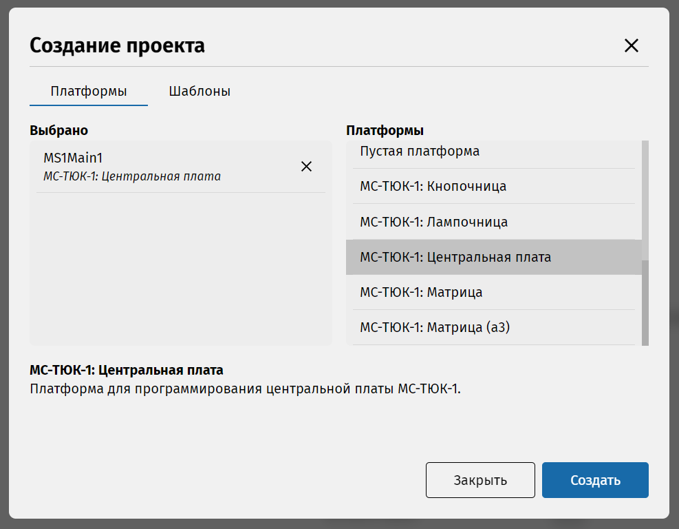

Для более удобной работы можно перейти в режим полного экрана, нажав на клавишу F11. Для выхода из полноэкранного режима нужно нажать F11 повторно.
Создадим новый проект. На боковой панели при запуске будет открыт раздел Документ. Если его нет, нажмите значок [значок документации] в левом верхнем углу. Нажмите «Создать...». В диалоговом окне в правом стоблце найдите платформу «МС-ТЮК-1: Центральная плата» и кликните два раза по ней левой кнопкой мыши, либо перетащите её, зажимая левую кнопку мыши пока она не окажется в правом столбце. После этого она должна появиться в списке «Выбрано» с автоматически сгенерированным именем «MS1Main1».
После того, как Вы добавите платформу, нажмите кнопку «Создать» в правом нижнем углу.
